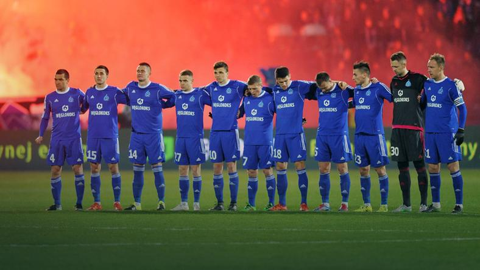

| Strona główna | O nas | Ekstraklasa | 1 liga |
Pomocnik Ruchu Chorzów, Przemysław Bargiel został zgłoszony do rozgrywek Ekstraklasy - poinformowano na stronie internetowej Niebieskich. 16-latek od kilku miesięcy trenuje z pierwszym zespołem chorzowskiego klubu.

Bargiel w styczniu podpisał z Ruchem swój pierwszy profesjonalny kontrakt. Jego umowa będzie obowiązywała do końca czerwca 2018 roku.
Pomocnik Ruchu jest reprezentantem Polski U-16. W drużynie narodowej rozegrał do tej pory trzynaście spotkań i zdobył trzy gole.
Najmłodszym zawodnikiem, który zadebiutował w polskiej lidze, jest Janusz Sroka. Napastnik Cracovii w sezonie 1969/70 wystąpił w meczu najwyższej klasy rozgrywkowej, mając 15 lat i 57 dni. Bargiel ma obecnie 16 lat i 17 dni.
Ruch Chorzów zajmuje ósme miejsce w grupie mistrzowskiej Ekstraklasy. W piątek jego rywalem będzie Pogoń Szczecin.
Za: ruchchorzow.com.pl